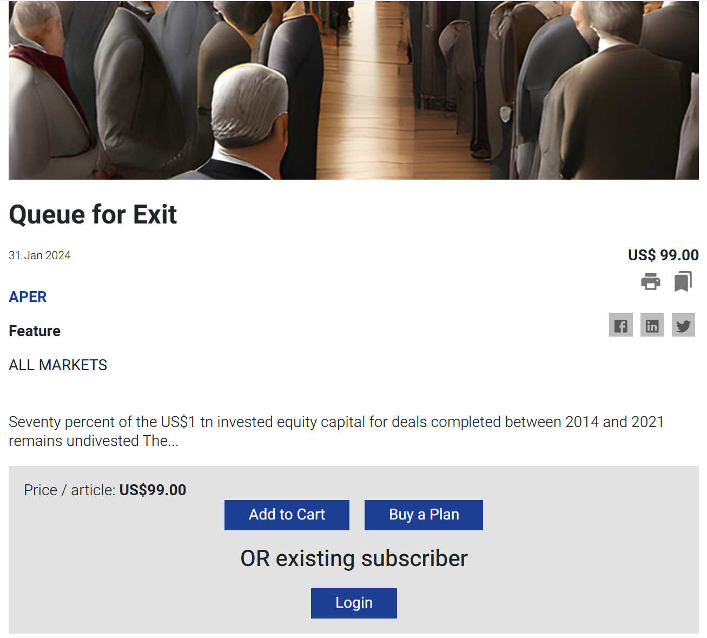
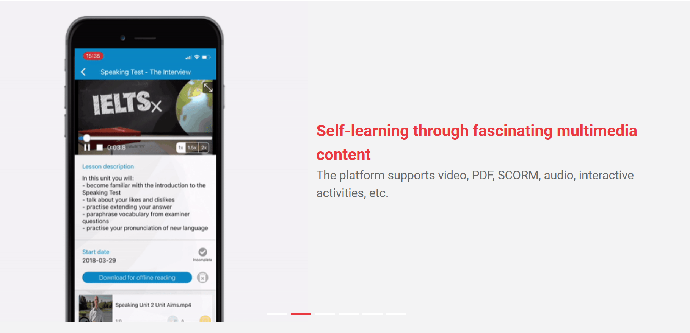
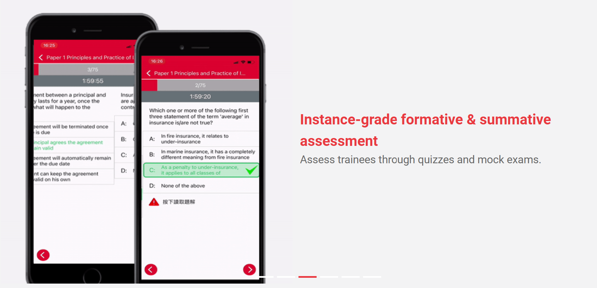

About Me
Hi! I'm a software engineer passionate about building tailored solutions for businesses. Explore my work below!
Professional Projects
Backend Development
PHP Projects
Publication Subscription Platform Revamp


Designed and developed the database and RESTful APIs based on both legacy and updated business logic.
Addressed complex user business logic for publication visibility settings determined by date, categories, and subscription plans. This required collaboration with the client using flowcharts and scenarios to map out the logic before implementation.
Achieved an 80% reduction in manual subscription processing and a 90% reduction in manual payment collection by automating subscription management, including shopping cart functionality and Stripe payment integration.
Technologies: Laravel, PHP, MySQL
B2B E-learning Platform


Developed and maintained RESTful APIs and database schemas for a robust e-learning platform tailored for enterprise clients.
Enhanced backend functionality with custom features, such as role-based access control and interactive learning modules, to improve user engagement.
Implemented optimized database schemas to handle high-volume concurrent users efficiently, ensuring seamless scalability.
Maintained and upgraded existing platforms, addressing critical bugs and optimizing performance to support over 3,000+ active users for a key insurance client.
Collaborated closely with frontend developers and project managers to align platform enhancements with business requirements.
Technologies: Laravel, PHP, MySQL, SQL
Jewelry Manufactory System
Designed and implemented the database and RESTful APIs to support production workflows.
Optimized database performance by using view tables to handle intricate auto-calculations for production operations.
Migrated 90% of Excel records into a database and digitized 90% of manual paperwork, including quotations and invoices.
Technologies: Laravel, PHP, MySQL
Water Pipeline Order System
Developed the database and RESTful APIs to streamline ordering workflows for pipelines.
Implemented auto-calculations for pipeline weight and pricing, accounting for variations across brands and features. Integrated quotation generation and shipping workflows for seamless operation.
Improved operational efficiency by automating 85% of the manual processes for order management and pricing calculations.
Technologies: Laravel, PHP, MySQL
E-Voucher Offer Form System
Developed and deployed the database and RESTful APIs to support customizable e-voucher claiming forms.
Enabled claim history tracking and statistical reporting functionalities.
Technologies: Laravel, PHP, MySQL

Academic Projects
Final Year Project (2019-2020)
TRAP: A VR and Mobile Cross-platform Networking Game
Developed a cross-platform co-op game for VR and mobile.
Specially designed the game characters for VR and mobile players so players can enjoy the game even they are using different devices.
Award: Best Final Year Project Award - Champion (link)
Technologies: Unity, C#